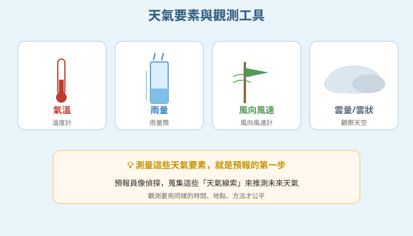
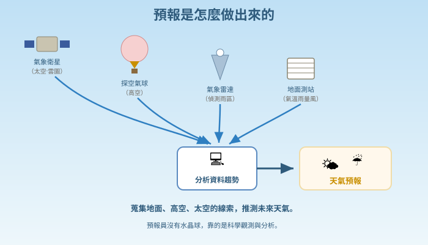
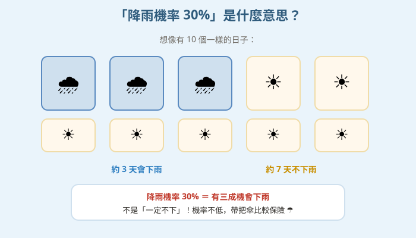

圖一（概念圖）：天氣要素與觀測工具

- 圖像目的
- 整理主要天氣要素與其測量工具。
- 圖中應出現的元素
- 氣溫（溫度計）、雨量（雨量筒）、風向風速（風向風速計）、雲（觀察）四格。
- 必須標示的科學概念
- 不同天氣要素用不同工具測量。
- 圖說
- 「測量這些天氣要素，就是預報的第一步。」
- AI 繪圖提示詞
- 溫暖手繪繪本風，四格：溫度計（氣溫）、雨量筒（雨量）、風向風速計（風）、各種雲（雲量）。繁體中文，白底。
- 避免畫錯的提醒
- 工具與要素對應正確；雨量筒是量「累積雨量」的直筒。
💡 預報員怎麼知道明天會不會下雨？他們靠的不是水晶球，而是每天測量氣溫、雨量、風向的科學觀測！
| 適合年級 | 國小四年級 |
|---|---|
| 可銜接年級 | 四年級 → 六年級（天氣變化、颱風）→ 國中大氣與海洋 |
| 主題分類 | 空氣、水與天氣 |
| 核心概念 | 天氣要素的觀測與測量；天氣會變化、可預報但不百分百準確 |
| 關鍵詞 | 天氣、氣溫、雨量、風向、風速、雲、觀測、預報 |
| 可銜接的國中概念 | 天氣系統、大氣觀測、氣象要素 |
| 建議閱讀時間 | 約 16 分鐘 |
| 適合搭配的課堂活動 | 自製風向袋雨量筒、一週天氣觀測、看天氣圖 |
週六早上，小狐同學看電視新聞，氣象預報員說：「今天各地多為晴到多雲，降雨機率 30%。」他高興極了，因為爸爸答應帶他去公園騎腳踏車。可是到了下午，天空忽然烏雲密布，還下起了一陣雨！小狐同學氣呼呼地說：「預報員說晴天，怎麼下雨了！他是不是亂講？」
他一邊躲雨，一邊想起早上出門前，其實有一些「徵兆」：天氣悶悶的、有點黏，遠方的天空堆了好多又厚又黑的雲，風也變大了。「奇怪，這些是不是在告訴我要下雨了？可是預報員又是怎麼『提前』知道天氣的呢？他們家裡是不是有一顆會預言的水晶球？」
雨停後，小狐同學路過學校旁的氣象站，看到裡面有好多奇怪的儀器：有一個會轉的箭頭、一個裝水的筒子、還有量溫度的東西。「這些是做什麼用的？該不會……預報員就是靠這些機器，來知道天氣的吧？」他越看越好奇，覺得天氣預報背後一定藏著什麼科學祕密。
黑熊老師剛好也在，笑著說：「小狐，預報員可沒有水晶球喔！他們的祕密武器，是每天在很多地方『測量』天氣的各種資料——氣溫幾度、下了多少雨、風往哪吹、雲長什麼樣，再加上衛星雲圖，用這些觀測到的證據來推測接下來的天氣。不過天氣變化很複雜，所以預報會用『降雨機率』來表示可能性，不是百分之百準確。我們一起來揭開天氣預報員的祕密吧！」
黑熊老師，預報員是怎麼「提前」知道天氣的？
靠「觀測」！他們在全國很多地方，每天不斷測量天氣的各種資料，再看這些資料怎麼變化，來推測接下來的天氣。就像偵探蒐集線索破案一樣，預報員蒐集天氣線索來推測未來。
要測量哪些天氣資料呢？
主要有幾樣：氣溫（多熱多冷）、雨量（下了多少雨）、風向和風速（風往哪吹、多強），還有雲的樣子和多少。這些叫「天氣要素」，用溫度計、雨量筒、風向風速計來量。
補一個冷知識！觀測天氣不能只靠地面的儀器。現在還有「氣象衛星」在太空中拍雲圖，「氣象雷達」偵測雨區，甚至放「探空氣球」到高空量資料。把地面、高空、太空的資料合起來，預報才會更準。台灣的中央氣象署就是這樣做的。
那為什麼有時候預報說晴天，卻下雨了？
因為大氣的變化非常複雜，一點點小改變可能就讓天氣不一樣，很難百分之百準確。所以預報員用「降雨機率」來表示可能性——「降雨機率 30%」是說「有三成的機會下雨」，不是「一定不下雨」。看到機率高，就記得帶傘比較保險。
原來降雨機率是這個意思！那我自己看天空，也能猜天氣嗎？
可以練習觀察！又厚又黑的積雨雲常帶來雷陣雨；天氣悶熱、風向改變，也可能是天氣要變的徵兆。古人還留下「朝霞不出門，晚霞行千里」這類看天經驗。不過這些只是初步的判斷，正式預報還是要靠科學儀器的觀測資料。
哼，預報根本沒用！說晴天還下雨，一定是預報員隨便亂猜的，還不如我看心情猜，猜錯了剛好而已～天氣哪有辦法預測啦！
迷思怪獸，這太冤枉預報員了！預報是根據大量觀測資料和科學方法推算的，準確度其實很高，只是天氣本來就有不確定性，不可能百分之百。而且預報非常有用——農夫靠它決定何時收割、漁船靠它避開風浪、我們靠它決定帶不帶傘、防颱防災。沒有天氣預報，會危險很多。你自己做一週觀測記錄，就會發現天氣是有規律、可以推測的！
我們來當小小氣象觀測員！自己做風向袋和雨量筒，每天固定時間記錄氣溫、雨量、風向和雲的樣子，連續觀測一週。測量要用同樣的方法、同樣的時間才公平喔。到戶外觀測注意安全，打雷時千萬別在空曠處！
天氣預報員不是用水晶球，而是靠觀測（測量）！他們每天在很多地方量天氣的各種資料，叫天氣要素：氣溫（多熱冷，用溫度計）、雨量（下多少雨，用雨量筒）、風向和風速（風往哪吹、多強，用風向風速計）、還有雲的樣子。再加上衛星雲圖等資料，推測接下來的天氣。天氣變化很複雜，所以預報用「降雨機率」表示可能性（30% 是有三成機會下雨），不是百分之百準確。天氣預報很有用，能幫我們準備穿著、出門和防災。
天氣預報建立在對天氣要素的持續觀測上，主要要素包含：氣溫、雨量、風向與風速、氣壓、濕度、雲量與雲狀。觀測工具如溫度計、雨量筒、風向風速計、氣壓計等，並結合氣象衛星（雲圖）、氣象雷達、探空氣球等取得地面、高空與大範圍資料。氣象人員分析這些資料的變化趨勢與天氣系統移動，推測未來天氣。由於大氣是複雜且對初始狀態敏感的系統，預報具不確定性，故以降雨機率等方式表達可能性（如「降雨機率 30%」表示在同樣天氣條件下約三成機會降雨）。季節不同，氣溫與天氣型態也不同，預報可協助生活決策與防災。
天氣是短時間內某地大氣的狀態，由溫度、氣壓、濕度、風、雲、降水等要素描述。氣象觀測結合地面測站、高空探測、雷達與衛星，建立大範圍即時資料，並以天氣圖（等壓線、鋒面、高低氣壓）分析天氣系統的分布與移動。現代預報運用數值天氣預報模式（以物理方程式與電腦運算推算大氣演變）。大氣為非線性系統，對初始條件敏感（混沌），使長期精確預報困難，故以機率表達不確定性。國中地球科學「天氣與氣候」「大氣與海洋」會延伸探討氣團、鋒面與天氣系統。



（本篇分鏡場景插圖籌備中，以下為分鏡腳本；場景圖可依提示詞產出，作法同其他文章。）
| 適合年級 | 四年級 |
|---|---|
| 材料 | 溫度計、透明直筒瓶（自製雨量筒，貼公分刻度）、布條或塑膠袋（自製風向袋）、指北針或方位標、紀錄表、（可觀察）天空與雲 |
觀測的「日期（不同天）」。
每天量到的氣溫、雨量、風向、雲量等天氣資料。
同一個觀測時間、同一個地點、同樣的工具與方法。
| 日期 | 氣溫 | 雨量 | 風向 | 雲量/天氣 |
|---|---|---|---|---|
| 星期一 | ||||
| 星期二 | ||||
| 星期三 |
連續觀測後，你會發現天氣資料每天不同，但常有趨勢與規律：例如氣壓下降、雲變多變厚、風向改變後，常會接著下雨；連續幾天悶熱可能有午後雷陣雨。這正是預報員在做的事——用觀測到的資料變化，推測接下來的天氣。因為要「公平比較」，觀測必須用同樣的時間、地點、方法（控制變因），資料才可靠。把自己的紀錄和正式預報比較，也能體會預報雖然很準但仍有不確定性，所以用降雨機率表達。
⚠️ 安全提醒：到戶外觀測要注意天氣狀況，打雷、豪雨、強風時不要到空曠處或高處，立即回室內；架設風向竿避免尖銳處傷人；玻璃溫度計小心勿摔破；觀測後洗手。切勿為了觀測而在危險天氣中逗留。
👾 迷思說法：天氣預報是預報員憑感覺亂猜的。
為什麼容易誤解：偶爾遇到預報不準。
✅ 正確說法：預報是根據大量觀測資料（氣溫、雨量、風、衛星雲圖等）和科學方法推算的，準確度其實很高。只是天氣有不確定性，不可能百分之百。
可以怎麼驗證：連續一週把預報和實際天氣比對，會發現大多數都相當接近。
👾 迷思說法：「降雨機率 30%」代表「一定不會下雨」。
為什麼容易誤解：覺得機率不到一半就是不下。
✅ 正確說法：降雨機率 30% 是說「有三成的機會下雨」，仍然可能下雨。機率不是零，最好還是留意、必要時帶傘。
可以怎麼驗證：統計許多「降雨機率 30%」的日子，大約每十天會有三天真的下雨。
👾 迷思說法：只要抬頭看天空，就能和預報一樣準確。
為什麼容易誤解：看到烏雲就知道要下雨。
✅ 正確說法：看天空可以做「短時間、近距離」的粗略判斷，但正式預報需要大範圍、地面到高空到太空的觀測資料，才能預測較長時間和較大範圍的天氣。
可以怎麼驗證：只看眼前天空無法預測明後天或遠方的天氣，需靠衛星等資料。
👾 迷思說法：只要地面測站的資料就足夠做預報了。
為什麼容易誤解：覺得地面量一量就好。
✅ 正確說法：還需要高空（探空氣球）、大範圍（雷達、衛星雲圖）的資料。天氣系統在很大的範圍和高空移動，缺了這些就看不到全貌。
可以怎麼驗證：看氣象署發布的衛星雲圖，能看到地面看不到的大片雲系移動。
👾 迷思說法：預報不準就代表天氣預報沒有用。
為什麼容易誤解：被少數不準的經驗影響。
✅ 正確說法：即使偶有誤差，天氣預報仍非常有用——防颱防災、農漁業、交通、日常決策都靠它，能減少危險與損失。表達不確定性（機率）正是負責任的做法。
可以怎麼驗證：颱風預報讓大家提前防災、減少傷亡，價值顯而易見。
1. 天氣預報員預測天氣，主要靠的是什麼？
(A) 水晶球 (B) 各種天氣資料的觀測與分析 (C) 擲骰子 (D) 個人心情
答案：B。靠觀測資料與科學方法推算。
2. 下列哪一項「不是」常見的天氣要素？
(A) 氣溫 (B) 雨量 (C) 風向 (D) 石頭硬度
答案：D。天氣要素包含氣溫、雨量、風、雲等。
3. 「降雨機率 30%」的正確意思是？
(A) 一定會下雨 (B) 一定不會下雨 (C) 有三成的機會下雨 (D) 會下三成的雨
答案：C。表示下雨的可能性成數。
4. 量「下了多少雨」要用哪種工具？
(A) 溫度計 (B) 雨量筒 (C) 風向計 (D) 指北針
答案：B。雨量筒量累積雨量。
5. 為什麼天氣預報不可能百分之百準確？
(A) 預報員偷懶 (B) 大氣變化複雜、有不確定性 (C) 儀器都是壞的 (D) 故意講錯
答案：B。大氣是複雜系統，對小改變敏感。
1. 寫出三種天氣要素，並說出各用什麼工具測量。
氣溫—溫度計；雨量—雨量筒；風向風速—風向風速計（雲量以觀察記錄）。任三種即可。
2. 除了地面的儀器，還有哪些方式可以觀測天氣？
氣象衛星（拍雲圖）、氣象雷達（偵測雨區）、探空氣球（量高空資料）等，取得高空與大範圍的天氣資訊。
3. 天氣預報偶爾不準，為什麼它還是很有用？
因為預報準確度整體很高，能幫助防颱防災、農漁業、交通與日常生活決策，減少危險與損失；用機率表達不確定性也讓我們能做好準備。
1. 你要比較「學校操場」和「校門口大馬路」哪裡的氣溫比較高。請設計一個公平的觀測方法，說明哪些條件要保持一樣。
用同一支溫度計、在同一天的同一個時間、放在同樣的高度、都避免陽光直射（放陰涼處或百葉箱式遮蔽），只改變「地點」這個變因，各量幾次取平均，才能公平比較兩地氣溫。
2. 氣象署常說「午後熱對流旺盛，山區有局部雷陣雨」。假設你觀測到中午過後又悶又熱、天空快速堆起又高又厚的雲，你會怎麼判斷接下來的天氣？該做什麼準備？
又悶又熱加上快速發展的積雨雲，是午後雷陣雨的徵兆，接下來可能有短時間強降雨、打雷。應該收好晾曬的衣物、準備雨具、避免到空曠處或山區溪邊活動，留意雷擊與溪水暴漲的危險。這說明觀測到的資料可以幫助我們推測並提前準備。
| 向度 | 待加強（1） | 通過（2） | 優秀（3） |
|---|---|---|---|
| 概念理解 | 認為預報是亂猜 | 知道預報靠觀測且有機率 | 能解讀多來源資料與不確定性 |
| 探究能力 | 觀測方法不一致 | 能控制變因完成一週紀錄 | 能分析趨勢並與預報比較 |
| 態度 | 忽視天氣安全 | 遵守戶外觀測安全 | 主動關注防災並提醒他人 |
| 檢核項目 | 結果 | 備註 |
|---|---|---|
| 科學概念是否正確 | ✅ | 天氣要素與工具、多來源觀測、降雨機率意義、預報不確定性，敘述正確。台灣中央氣象署為既有機構。 |
| 是否符合年級理解程度 | ✅ | 四年級以預報經驗與自製觀測工具切入。 |
| 是否有錯誤或過度簡化的比喻 | ✅ | 「偵探蒐集線索」比喻恰當，未造成錯誤概念。 |
| 是否清楚區分觀察、推論與解釋 | ✅ | 由觀測資料變化推論天氣趨勢。 |
| 圖像提示詞是否可能造成誤解 | ✅ | 已提醒工具與要素對應、機率為可能性非絕對。 |
| 實驗是否安全 | ✅ | 強調惡劣天氣勿在戶外、玻璃小心，安全低成本。 |
| 是否需要補充資料來源 | ✅ | 對應 INd-Ⅱ-7、INd-Ⅱ-6；見教師補充。 |
| 是否適合轉成 HTML 網頁 | ✅ | 結構完整，含互動測驗與摺疊區。 |